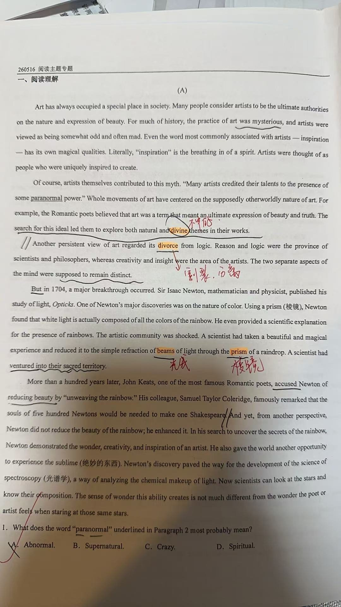
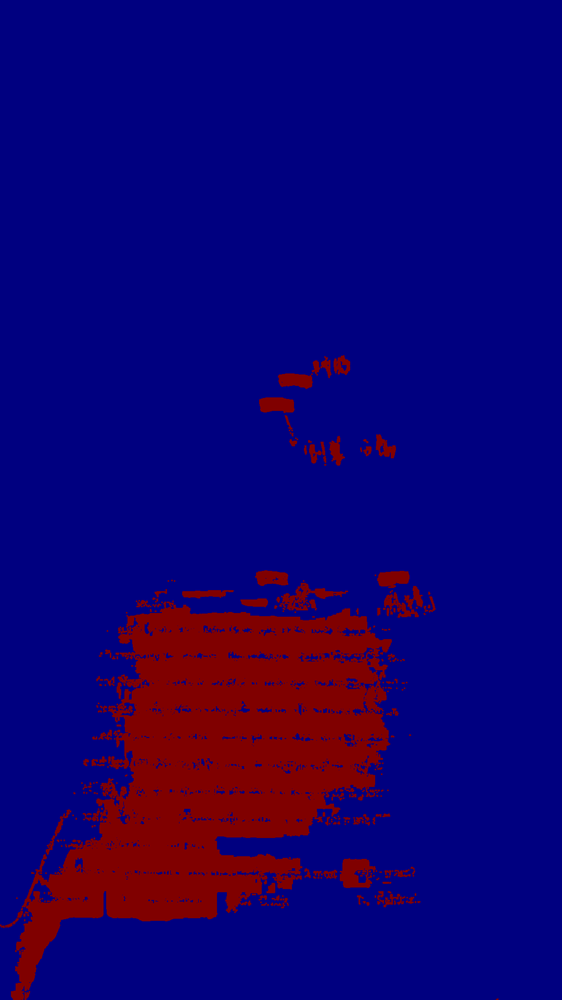
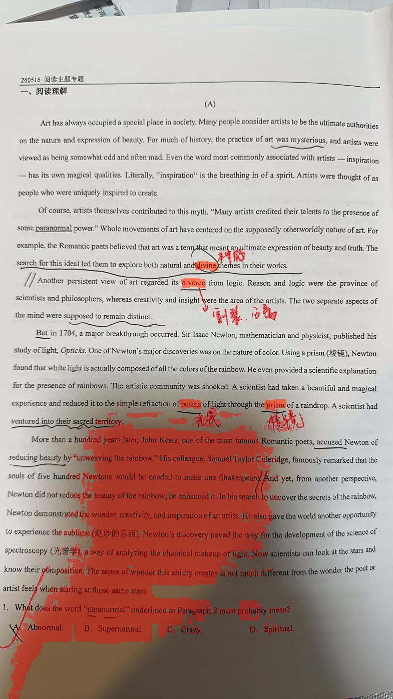
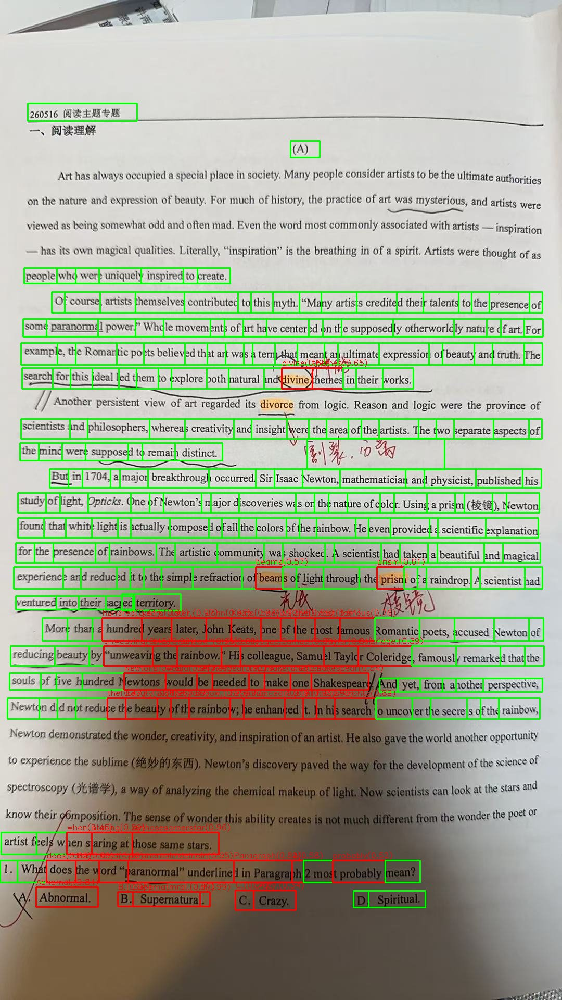
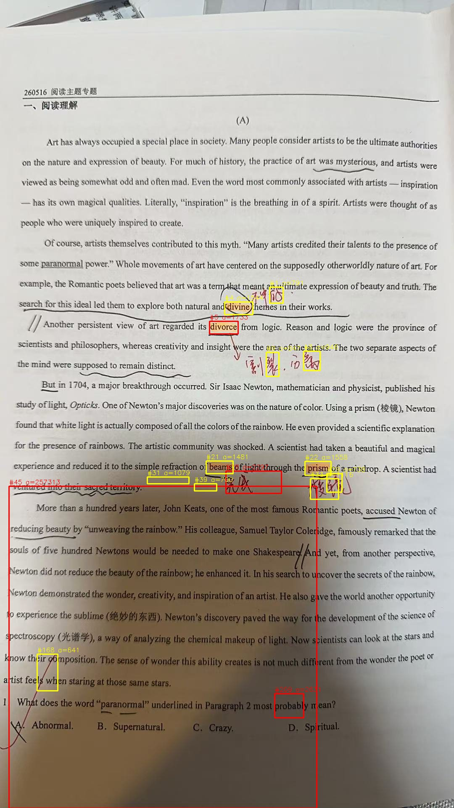
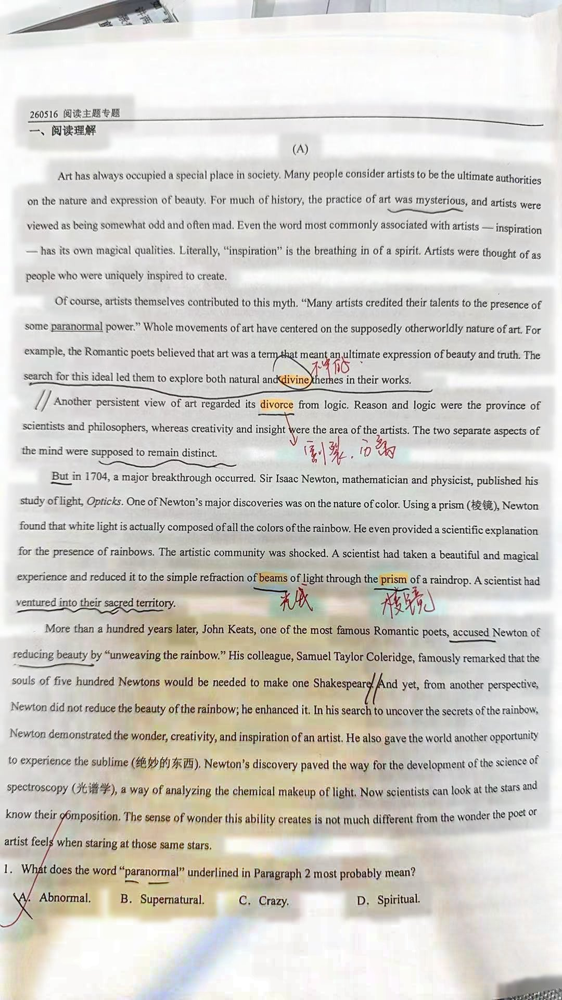

01.jpg Highlight Detection Debug
1. Warped (透视变换后)

2. Highlight Mask (高亮mask)

3. Highlight Overlay (高亮叠加 红色=高亮)

4. Word BBoxes (红=高亮 绿=未高亮)

5. Connected Components (红=Top4 黄=其他)

6. Enhanced (光照归一化)
